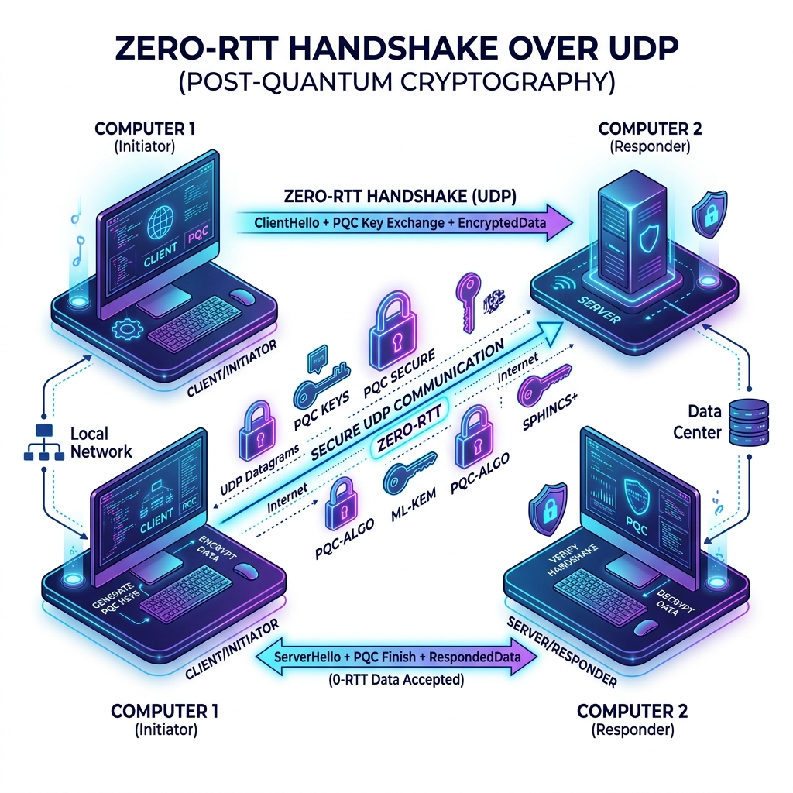

[College Logo Here]
[NAAC Logo Here]
Z-PROTOCOL: ZERO-RTT POST-QUANTUM SECURE COMMUNICATION
Engineering Exploration - IV
Submitted by
| STUDENT 1 |
(REGISTER NO 1) |
| STUDENT 2 |
(REGISTER NO 2) |
| STUDENT 3 |
(REGISTER NO 3) |
| STUDENT 4 |
(REGISTER NO 4) |
In partial fulfillment for the award of the degree of
BACHELOR OF ENGINEERING
in
COMPUTER SCIENCE AND ENGINEERING
(CYBER SECURITY)
[YOUR COLLEGE NAME HERE]
An Autonomous Institute, Accredited by NAAC with "A" Grade
ANNA UNIVERSITY: CHENNAI 600025
APRIL–2026
ANNA UNIVERSITY: CHENNAI 600025
BONAFIDE CERTIFICATE
Certified that this project report "Z-PROTOCOL: ZERO-RTT POST-QUANTUM SECURE COMMUNICATION" is the bonafide work of "STUDENT 1 (REG NO), STUDENT 2 (REG NO)" who carried out the work in Engineering Exploration – IV under my supervision.
SIGNATURE
[Guide Name]
ASSISTANT PROFESSOR
Department of Computer Science
and Engineering (Cyber Security)
[College Name] |
SIGNATURE
[HOD Name]
HEAD OF THE DEPARTMENT
Department of Computer Science
and Engineering (Cyber Security)
[College Name] |
Submitted for the University Engineering Exploration - IV viva-voce conducted on.....................
INTERNAL EXAMINER
ACKNOWLEDGEMENT
We express our deepest gratitude to our Chairman and Management for their continuous encouragement and support throughout the course of study. We are thankful to our Secretary for their encouragement.
We would like to express our gratefulness to our Principal for his academic interest shown towards the students. We are very grateful to our Dean of Academics and Head of the Department of Computer Science and Engineering for providing us with the necessary facilities.
It’s a great pleasure to thank our Project Guide for their valuable technical suggestion and guidance throughout this project work. We solemnly extend our thanks to all the teaching and non-teaching staff of our Department, family, and friends for their valuable support.
ABSTRACT
As global network communications increasingly demand ultra-low latency, traditional security protocols such as TCP/TLS struggle to meet these requirements due to the overhead of multi-step cryptographic handshakes. Furthermore, the foundational security of these protocols relies on classical asymmetric algorithms (e.g., RSA and Elliptic Curve Cryptography), which are acutely vulnerable to the rapidly advancing threat of Cryptographically Relevant Quantum Computers (CRQCs). This project introduces Z-Protocol: a custom, zero-round-trip-time (0-RTT), quantum-resistant secure communication protocol built over UDP.
Z-Protocol eliminates connection setup delays by encapsulating both the cryptographic key exchange and the encrypted payload within the initial transmission packet. The protocol implements a hybrid cryptographic architecture, combining ML-KEM-1024 (NIST Post-Quantum Cryptography standard) with the battle-tested X25519 elliptic curve. Additionally, Z-Protocol features a custom fragmentation engine for large payloads and a SHA3-512 Proof-of-Work (PoW) mechanism to defend against DDoS attacks.
Experimental deployment and testing demonstrate that Z-Protocol successfully achieves instantaneous secure data transmission without compromising reliability or security. By stripping away multi-round-trip overhead while integrating state-of-the-art post-quantum defenses, Z-Protocol serves as a highly efficient blueprint for next-generation secure networking.
TABLE OF CONTENTS
| NO | TITLE | PAGE |
| ABSTRACT | iv |
| LIST OF ABBREVIATIONS | v |
| LIST OF FIGURES | vi |
| 1 | INTRODUCTION | 1 |
| 1.1 | Introduction to Network Security | 1 |
| 1.2 | Need for Post-Quantum Protocols | 2 |
| 1.3 | Introduction to Z-Protocol | 3 |
| 2 | LITERATURE SURVEY | 4 |
| 2.1 | Evolution of Secure Communication | 4 |
| 2.2 | The Quantum Threat | 5 |
| 3 | SYSTEM REQUIREMENTS | 6 |
| 3.1 | Hardware Requirements | 6 |
| 3.2 | Software Requirements | 6 |
| 4 | PROPOSED METHODOLOGY | 7 |
| 4.1 | System Architecture | 7 |
| 4.2 | Packet Structure | 8 |
| 5 | IMPLEMENTATION AND RESULTS | 10 |
| 6 | CONCLUSION | 12 |
CHAPTER 1
INTRODUCTION
1.1 INTRODUCTION TO NETWORK SECURITY
In modern network architecture, secure communication is primarily handled by the Transport Layer Security (TLS) protocol running over the Transmission Control Protocol (TCP). While this guarantees ordered, error-checked, and encrypted delivery of data, it requires significant back-and-forth communication (handshakes) before a single byte of application data is securely transmitted. This overhead is fundamentally incompatible with the rising demand for instantaneous data transfer in the modern world.
1.2 NEED FOR LOW-LATENCY AND POST-QUANTUM PROTOCOLS
In high-latency environments (such as satellite communications) or real-time systems, the delay introduced by traditional handshakes is unacceptable. Furthermore, the mathematical foundations of current public-key cryptography (RSA and Elliptic Curves) are theoretically broken by Shor's algorithm running on a sufficiently powerful quantum computer. Threat actors are currently engaging in "Store-Now-Decrypt-Later" attacks to steal and store today's encrypted data.
1.3 INTRODUCTION TO Z-PROTOCOL
Z-Protocol is a custom cryptographic network protocol designed to solve both the latency and quantum-threat problems. Operating over UDP, it achieves 0-RTT (Zero Round-Trip Time) communication by packing the client's public keys, the ciphertext, and a cryptographic puzzle solution into the very first packet. It utilizes a hybrid approach, securing data with both classical X25519 and post-quantum ML-KEM-1024.
CHAPTER 2
LITERATURE SURVEY
2.1 EVOLUTION OF SECURE COMMUNICATION
Historically, secure communication required pre-shared keys. The invention of public-key cryptography (Diffie-Hellman, RSA) allowed secure key exchange over public channels, forming the basis of SSL and TLS. TLS 1.3 introduced a 0-RTT mode, but it relies on a previously established session ticket, meaning the very first connection still requires a full handshake. This remains a significant bottleneck for entirely new connections in decentralized networks.
2.2 THE QUANTUM THREAT
Research indicates that CRQCs (Cryptographically Relevant Quantum Computers) will eventually break the discrete logarithm problem. In response, NIST initiated a multi-year competition to standardize Post-Quantum Cryptography (PQC). In 2024, ML-KEM (originally known as CRYSTALS-Kyber) was officially standardized as FIPS 203.
CHAPTER 3
SYSTEM REQUIREMENTS
3.1 HARDWARE REQUIREMENTS
- Processor: Dual-core CPU or higher (Intel/AMD)
- RAM: Minimum 4 GB
- Networking: Standard Wi-Fi or Ethernet adapter supporting UDP traffic
3.2 SOFTWARE REQUIREMENTS
- Operating System: Linux (Ubuntu, Kali Linux), macOS, or Windows
- Programming Language: Python 3.10+
- Core Libraries:
liboqs-python, cryptography, scapy, asyncio
CHAPTER 4
PROPOSED METHODOLOGY
4.1 SYSTEM ARCHITECTURE
The system operates in a Client-Server topology during the initial connection, evolving into full bidirectional peer-to-peer communication. The architecture utilizes a hybrid approach for Key Encapsulation, running ML-KEM alongside X25519.

Fig 1: System Architecture of Z-Protocol
4.2 PACKET STRUCTURE AND FRAGMENTATION
The protocol relies on a strict binary structure containing a 26-byte Header, a 1600-byte Key Encapsulation block (for Handshakes), and the encrypted payload. To bypass UDP MTU limitations, Z-Protocol includes a custom fragmentation engine that parses large payloads into indexed packets for reassembly.
4.3 PROOF-OF-WORK MECHANISM
To defend against DDoS attacks, clients must brute-force a nonce until the SHA3-512 hash of the packet header begins with a required prefix, proving computational effort prior to server validation.
CHAPTER 5
IMPLEMENTATION AND RESULTS
The protocol was successfully implemented in Python using the asyncio framework for non-blocking I/O. The system demonstrated true 0-RTT communication over a local wireless network, instantly establishing a secure connection and transferring data without the standard TCP/TLS handshake. The fragmentation engine successfully reassembled large files securely across the network.
CHAPTER 6
CONCLUSION AND FUTURE ENHANCEMENTS
6.1 CONCLUSION
The Z-Protocol project successfully proves that combining Post-Quantum Cryptography with Zero-Round-Trip-Time UDP transmission is highly effective. By eliminating the multi-step handshake, the protocol dramatically reduces latency while remaining secure against future quantum threats.
6.2 FUTURE ENHANCEMENTS
Future iterations of Z-Protocol will include a continuous key-ratchet mechanism (Forward Secrecy) and a custom packet-loss recovery system for highly unstable networks. Furthermore, rewriting the core engine in C or Rust will allow for kernel-level integration, drastically improving throughput.